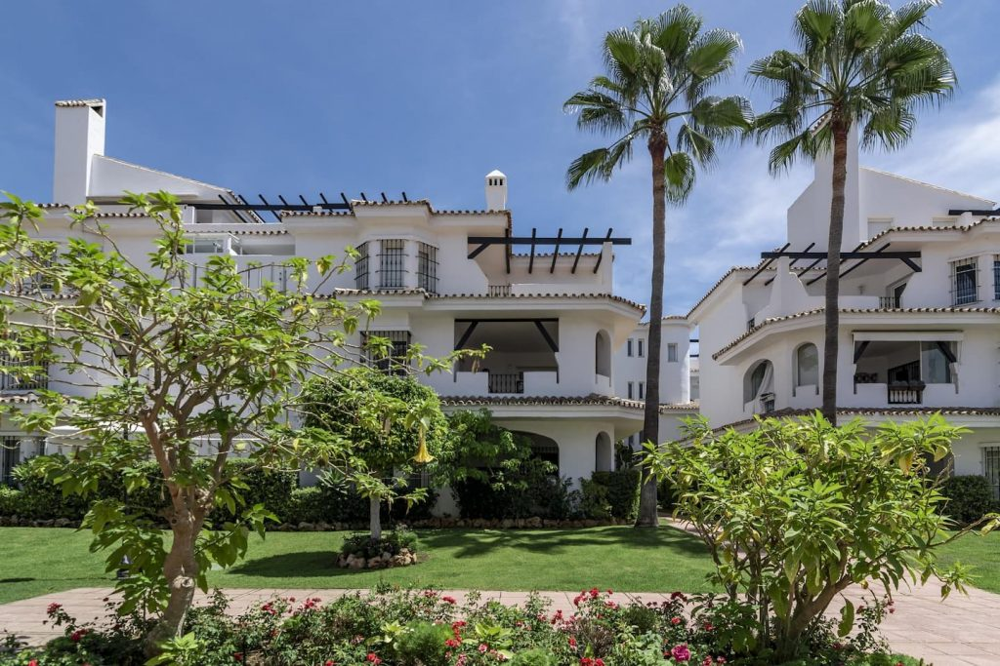
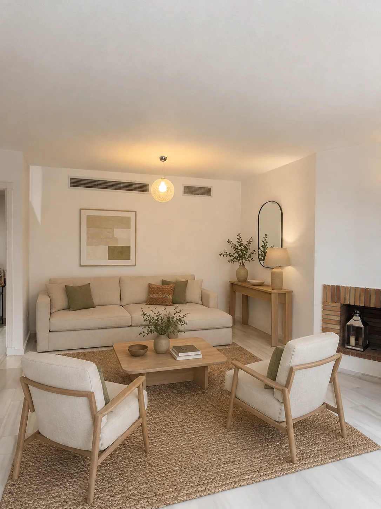
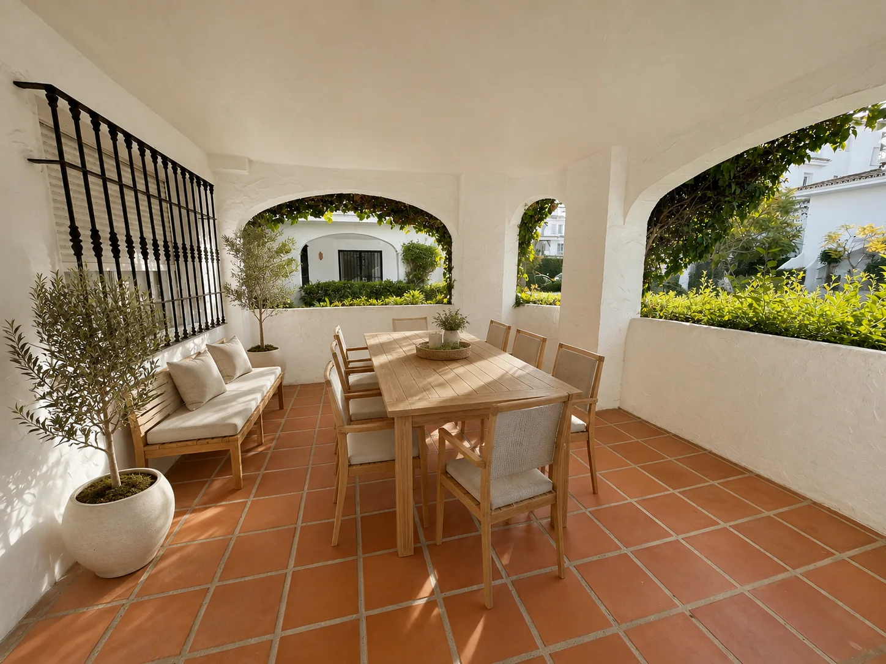
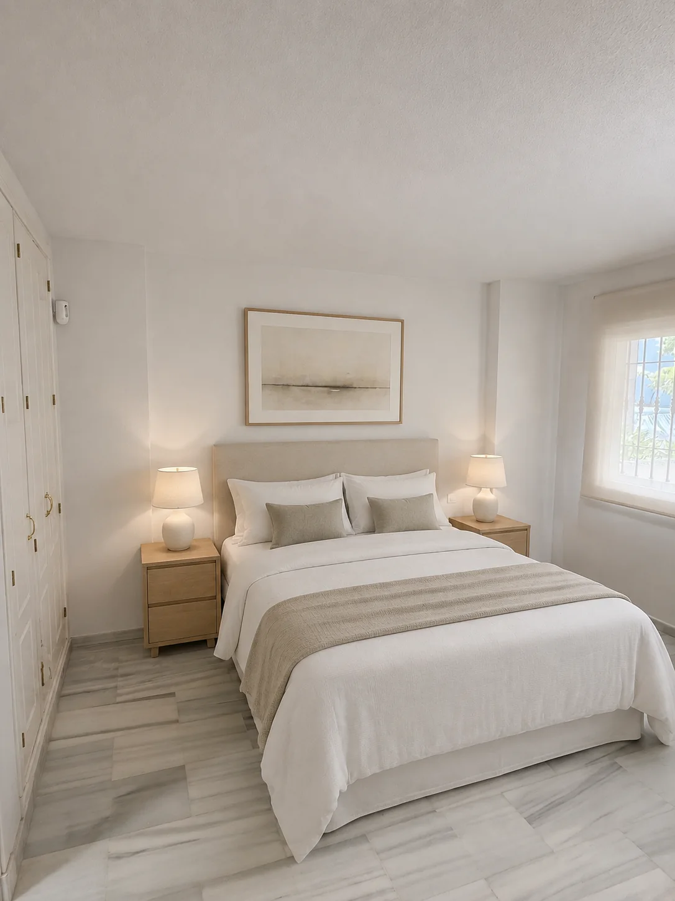
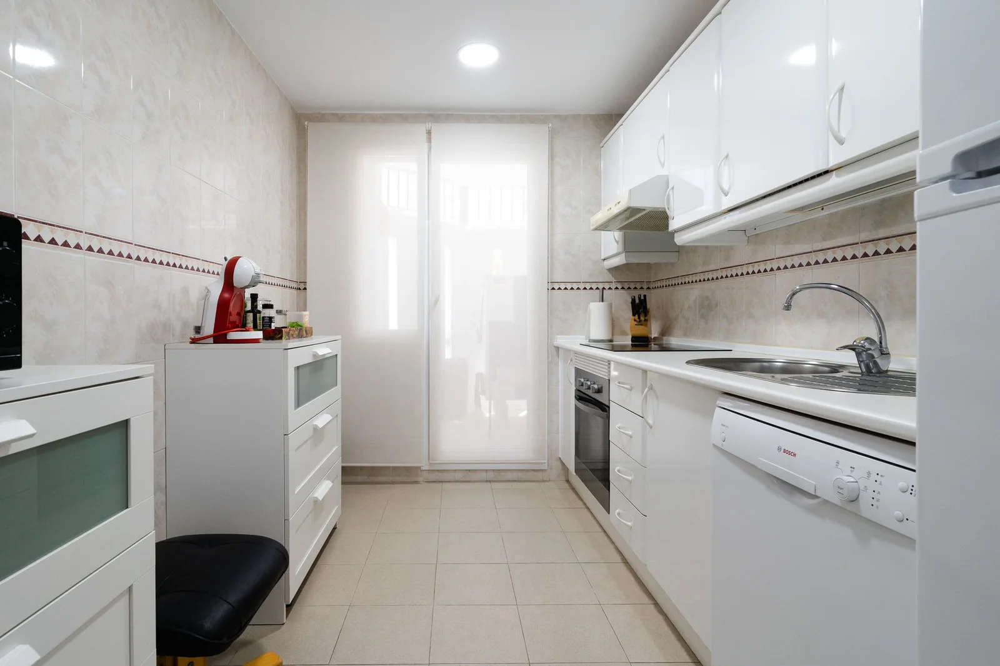
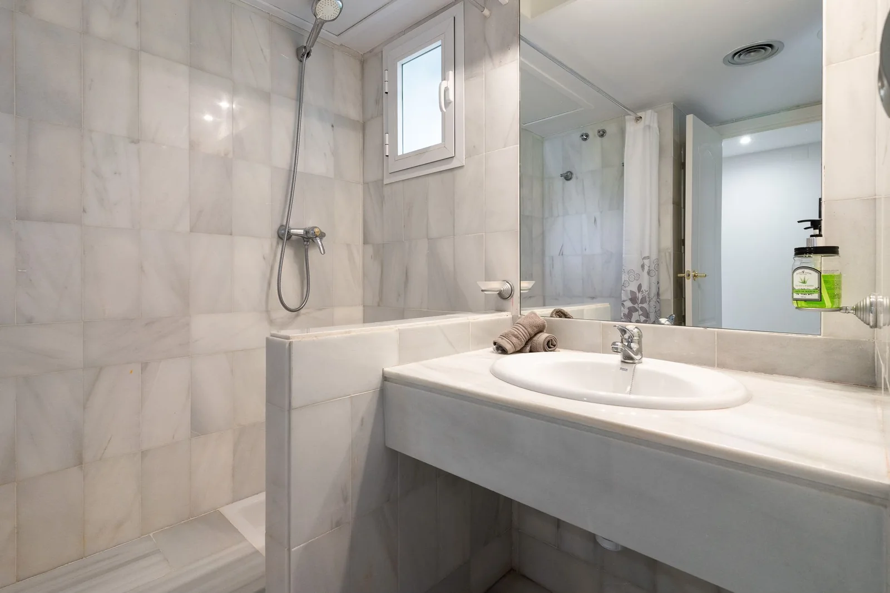
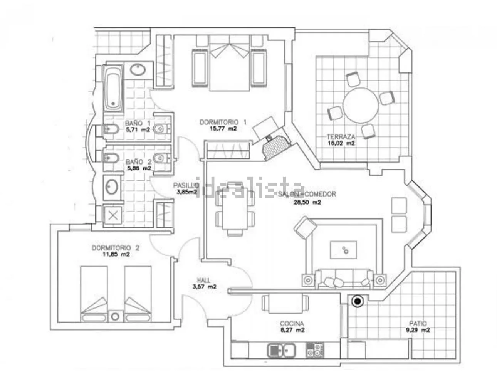
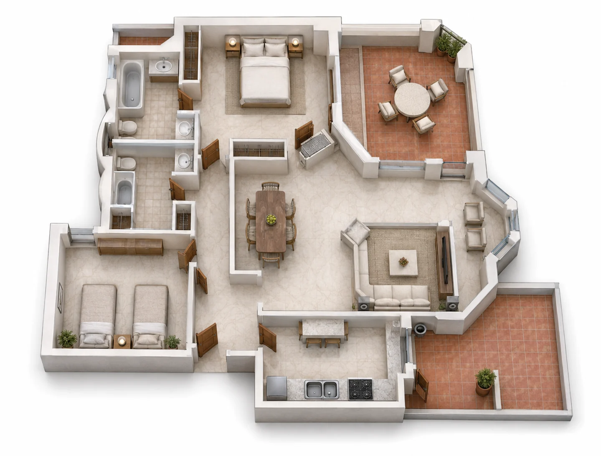
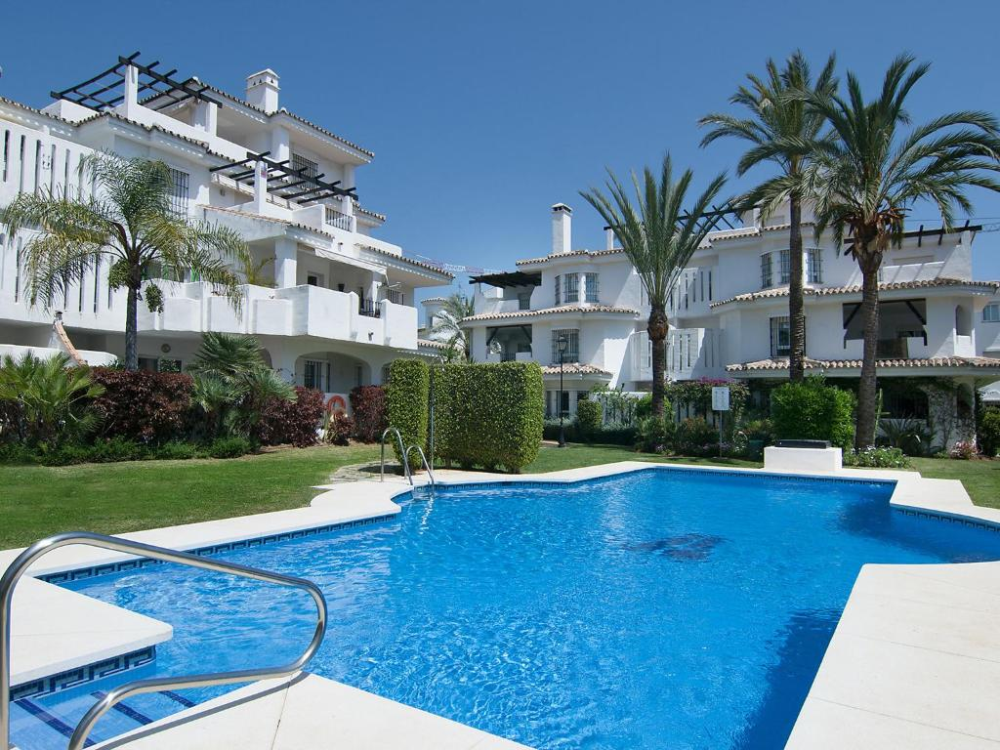
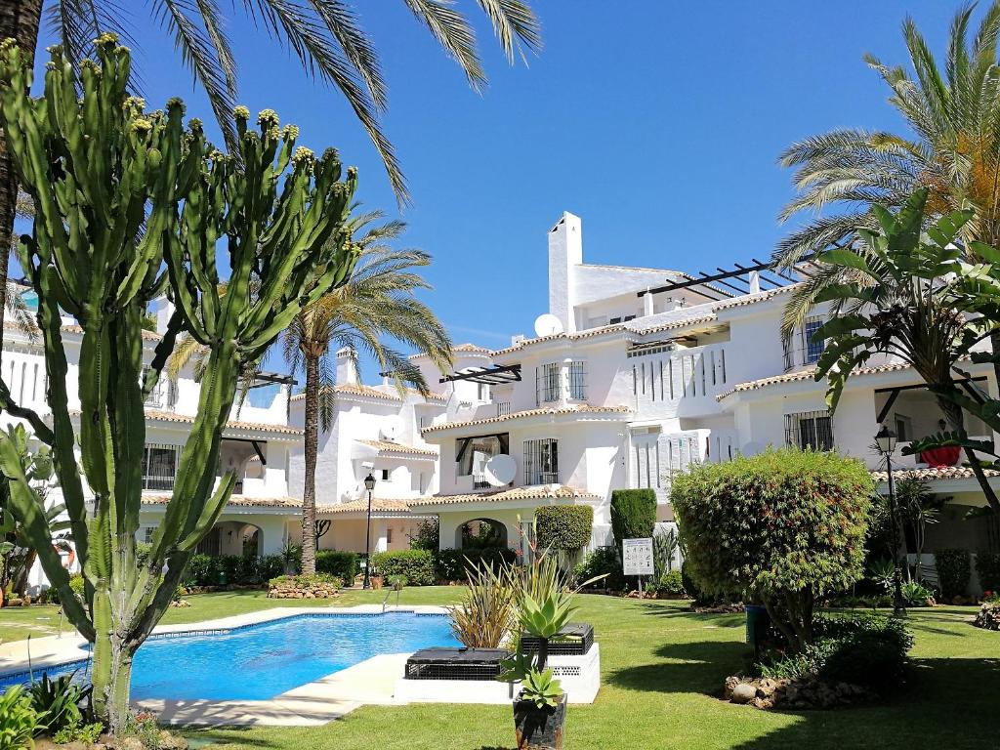

Nueva Andalucía
Un entorno residencial consolidado dentro del mercado inmobiliario de Marbella.
Nueva Andalucía · Marbella
Los Naranjos de Marbella como punto de partida: un enclave consolidado, de identidad andaluza y vida mediterránea, analizado con conocimiento próximo y criterio inmobiliario.
Descubrir el enclave ↓
Un enclave con identidad propia
Los Naranjos de Marbella se integra en Nueva Andalucía, a pocos minutos de Puerto Banús. Sus apartamentos y viviendas adosadas se organizan entre calles tranquilas, piscinas y jardines maduros.
La arquitectura blanca, las terrazas y los espacios exteriores componen una identidad reconocible. Para el inversor, esa coherencia del entorno debe analizarse junto con la fase, el estado de cada vivienda, sus gastos y el uso previsto.
Cómo analizo una oportunidad →Un entorno residencial consolidado dentro del mercado inmobiliario de Marbella.
Terrazas, jardines y piscinas como parte esencial de la experiencia cotidiana.
Comercio, restauración, deporte y conexiones con Puerto Banús y la Costa del Sol.
La tesis de inversión
La arquitectura andaluza y el paisaje comunitario aportan continuidad visual a la urbanización y ayudan a diferenciarla.
Distribución, terraza, luz, privacidad, vistas y estado de conservación pueden cambiar de forma sustancial el valor de una oportunidad.
Precio de entrada, costes de adquisición, comunidad, reforma y escenario de uso deben estudiarse conjuntamente.
Análisis local
El atractivo de la zona abre la conversación. La calidad concreta de la operación la deciden los detalles.
Comparables relevantes, fase, orientación, superficie, terrazas, estado y singularidades del inmueble.
Reforma, actualización, mobiliario, eficiencia y posibles intervenciones antes de su uso o comercialización.
Comunidad, mantenimiento, fiscalidad y otros gastos que condicionan el coste total de propiedad.
Uso personal, residencial o arrendamiento deben contrastarse con la documentación y la normativa aplicable.
En venta · Los Naranjos de Marbella
Una vivienda de dos dormitorios con orientación sur, piscina comunitaria y licencia turística, presentada con información económica clara para facilitar una primera valoración.
390.000 € · Precio firme, no sujeto a ofertas

Orientación sur con vistas hacia la zona de aparcamiento, dentro de una urbanización con arquitectura mediterránea y piscina comunitaria.


Aviso sobre las imágenes: algunas fotografías incorporan home staging virtual. El mobiliario y la decoración pueden haber sido retocados o recreados con fines comerciales y de interiorismo y no forman parte necesariamente de la venta.
Estado actual






“El valor empieza por comprender el lugar.”
Jaime Sureda
Acompañamiento personal
El trabajo comienza definiendo qué tipo de inmueble, presupuesto, horizonte y uso encajan con el comprador. A partir de ahí, la búsqueda se concentra en oportunidades que merezcan una revisión real.
Jaime Sureda acompaña la selección inicial, las visitas y el acceso ordenado a la información disponible, coordinando los siguientes pasos con los asesores jurídicos, técnicos y fiscales elegidos por el cliente.
Los Naranjos de Marbella
Siga la actualidad del entorno, descubra publicaciones sobre la urbanización y conecte con la comunidad de Los Naranjos de Marbella.
Preguntas frecuentes
La urbanización reúne apartamentos y viviendas adosadas distribuidos en distintas fases, con arquitectura mediterránea, jardines y piscinas comunitarias. Las características concretas varían según la fase y la vivienda.
Conviene revisar el precio de entrada, el estado del inmueble, los costes de comunidad, la documentación, las normas aplicables y el uso previsto antes de tomar una decisión.
No. Cualquier escenario de rentabilidad depende del precio, los costes, el uso, la ocupación y la normativa. Cada operación debe analizarse individualmente y contrastarse con asesores independientes.
Sí. El acompañamiento incluye definición de criterios, selección inicial, coordinación de visitas y acceso ordenado a la información disponible, sin sustituir el asesoramiento jurídico, técnico o fiscal independiente.
Contacto directo
Comparta sus criterios de búsqueda y reciba un acompañamiento directo para estudiar oportunidades en Los Naranjos de Marbella.
Al contactar, sus datos se usarán para atender la consulta. Más información sobre privacidad.